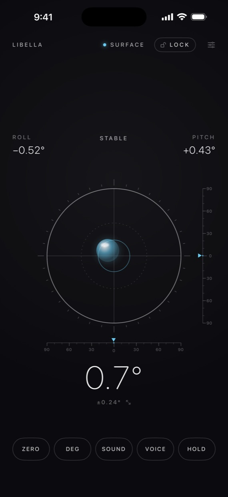
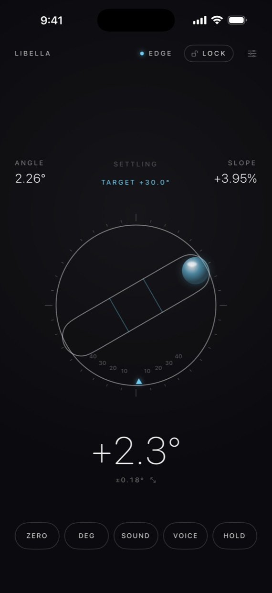
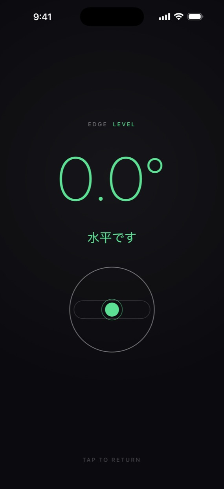
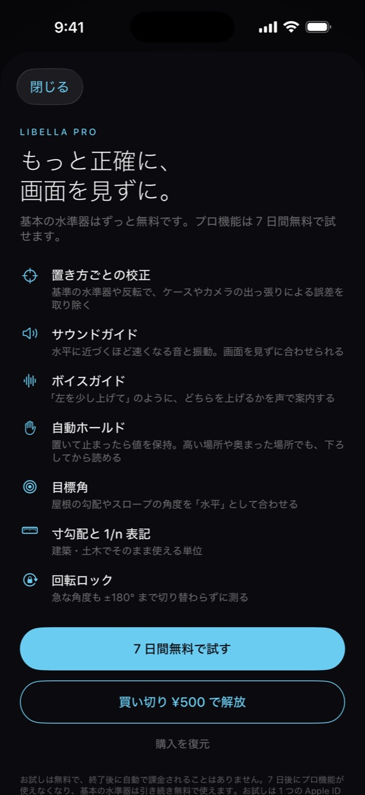
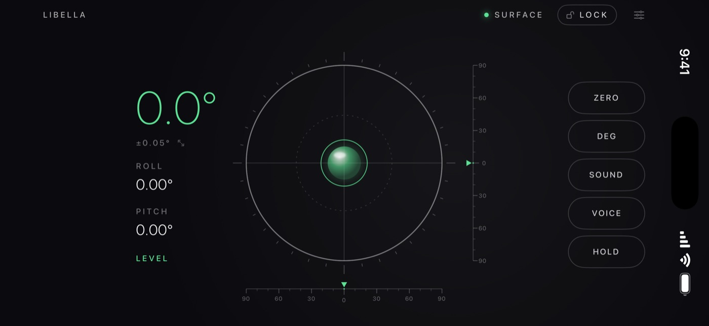

気泡のなめらかな動きと、
0.01° 単位の数値表示。
Libella は、ミニマルで美しい画面のまま、撮影、設置、DIY の現場で「手元にあると助かる」機能をそろえた水準器・傾斜計です。「左前を少し上げて」と、どちらを上げればよいかを声で案内するので、画面が見えない場所でも水平に合わせられます。
基本の水準器無料
- 平らに置くと円形の水準器、立てると気泡管の水準器に自動で切り替わります
- 気泡は液体のように少し行き過ぎてから落ち着きます
- 前後左右の傾きを ±90° の目盛りでも表示。気泡が振り切れても角度が分かります
- 値の揺れから推定誤差を表示し、安定したかどうかが分かります
- ZERO で今の姿勢を基準に、HOLD で値を固定
- 大きな数字をタップすると、離れた場所からでも読める大表示に
- 度、%、mm/m、ラジアンに対応。端末の向きに合わせて画面全体が回転します
Libella Pro7 日間無料・買い切り
- どちらを上げるかを声で案内：「左前を少し上げて」「水平です」
- 水平に近づくほど速くなる、音と振動のガイド
- 自動ホールド：置いて止まったら値を保持。高い場所に置いて、下ろしてから読めます
- 置き方ごとの校正：基準の水準器や 180° 反転で、ケースやカメラの出っ張りによる誤差を取り除きます
- 目標角：屋根の勾配やスロープの角度を「水平」として合わせられます。気泡管のダイヤルを指で回して設定
- 寸勾配と 1/n 表記
- 回転ロック：急な角度も ±180° まで切り替わらずに測れます
こんな場面に
- カメラ、三脚、撮影台、照明スタンドの水平出し
- 棚、家具、家電、額縁の設置
- ギャラリーや店舗の展示、什器の設置
- レコードプレーヤー、水槽、3D プリンタの台、車中泊の水平出し
料金について
- 広告はありません。基本の水準器はずっと無料で使えます
- Pro は 7 日間無料で試せます。お試しが終わっても、自動で課金されることはありません
- Pro は買い切りです。一度購入すると、同じ Apple アカウントの端末すべてで使えます
精度について
Libella は iPhone の加速度センサーで傾きを測ります。校正すると誤差を小さくできますが、機種、置き方、ケースによって誤差が残ることがあります。建築の施工や検査など、高い精度が求められる用途には、専用の水準器や測定器をお使いください。アプリ内の「精度を検証する」で、お手持ちの基準器と比べて誤差を確かめられます。
Libella
A spirit level and inclinometer that pairs a smoothly moving bubble with readouts down to 0.01°. It tells you which side to raise — "Raise the near left corner a little" — so you can level things even where you can't see the screen.
The basic level (free)
- Round bubble level when laid flat, tube level when stood on an edge — it switches automatically
- ±90° scales, an estimated error that shows when the reading is stable, ZERO and HOLD
- A big readout you can read from across the room; degrees, %, mm/m and radians
Libella Pro (7-day free trial, one-time purchase)
- Voice guidance, plus sound and haptics that speed up as you get closer to level
- Auto-hold, per-placement calibration, target angles set with a dial, Japanese sun pitch and 1/n ratio, and rotation lock up to ±180°
No ads. The basic level is free forever. You are never charged automatically when the trial ends.
Libella measures tilt with the iPhone's accelerometer. Some error may remain depending on the model, placement and case. For work that demands high precision, such as construction or inspection, use a dedicated level or measuring instrument.